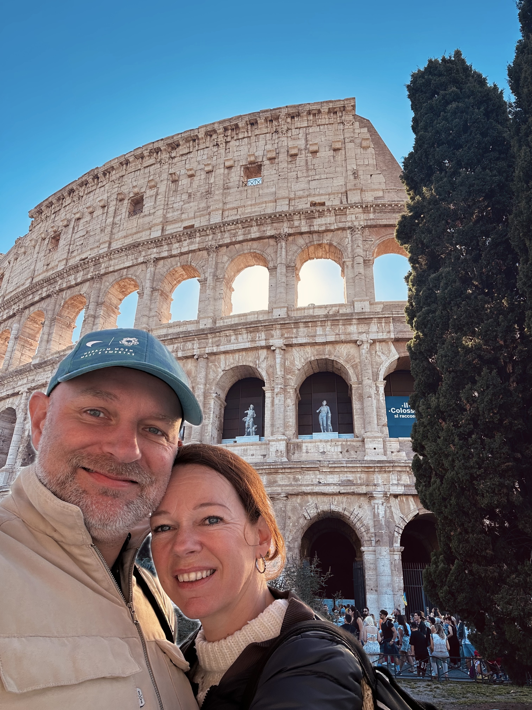

De legende begint met bloed. De tweeling Romulus en Remus, zoons van de oorlogsgod Mars en een vestaalse maagd, worden als baby's te sterven gelegd aan de oever van de Tiber. Een wolvin vindt ze en zoogt ze groot. Als de jongens volwassen zijn besluiten ze een stad te stichten op de heuvels boven de rivier — maar welke heuvel, en wie mag de stad zijn naam geven?
Romulus kiest de Palatijn, Remus de Aventijn. Ze wachten op een voorteken: vogels. Remus ziet zes gieren, Romulus twaalf. Romulus wint. Als Remus spottend over de net getrokken stadsgrens springt, doodt zijn broer hem ter plekke. "Zo vergaat het iedereen die over mijn muren springt." Romulus wordt de eerste koning. Het jaar is 753 voor Christus — en die Palatijn waar je straks doorheen loopt is precies die heuvel.
Rome kent zeven koningen — de laatste, Tarquinius Superbus, zo tiranniek dat de Romeinen hem in 509 v.Chr. verjagen. Ze stichten een republiek: twee consuls die elkaar kunnen tegenhouden, een Senaat van edelen, en volkstribunen die voor de gewone burger opkomen. Dit systeem van checks and balances is de blauwdruk voor elke westerse democratie die volgt.
In drie eeuwen veroveren de Romeinen heel Italië, dan Carthago (na drie oorlogen tegen Hannibal), dan Griekenland, Spanje en Noord-Afrika. Het Middellandse Zeegebied wordt één Romeinse vijver: mare nostrum, onze zee. Maar succes brengt verdeeldheid. Generaals worden machtiger dan politici.
Julius Caesar steekt in 49 v.Chr. de Rubicon over — de grensrivier die geen veldheer gewapend mocht passeren. Zijn overwinning is totaal. Op de Ides van Maart, 15 maart 44 v.Chr., steken 23 senatoren hem dood in de Curia — en het Forum Romanum, waar je doorheen loopt, was de scène van de nasleep.
Caesars erfgenaam Octavianus hernoemt zichzelf Augustus — de Verhevene — en wordt de eerste keizer. Hij noemt zichzelf nooit keizer, alleen "eerste burger." Toch regeert hij 41 jaar. Na hem volgen tientallen keizers: Tiberius de achterdochtige. Caligula die zijn paard consul maakt. Claudius de geleerde stotteraar. Nero, die een brand gebruikt om zijn Gouden Huis te bouwen — 80 hectare in het hart van Rome.
Vespasianus begint het Colosseum. Hadrianus bouwt het Pantheon opnieuw en trekt een 117 kilometer lange muur door Brittannië. De Pax Romana — twee eeuwen relatieve vrede — maakt Rome tot een stad van een miljoen inwoners. In 313 vaardigt Constantijn I het Edict van Milaan uit: het Christendom wordt vrij.
Maar het Rijk is te groot. Het splijt in een Westers en een Oosters deel. In 410 plunderen de Visigoten Rome — voor het eerst in 800 jaar betreedt een vijand de stad. In 476 deponeert de Germaanse aanvoerder Odoaker de laatste Westerse keizer: een zeventienjarige jongen die toevallig Romulus Augustulus heet, vernoemd naar zowel de stichter als de eerste keizer.
Na de val daalt de bevolking van Rome in twee eeuwen van een miljoen naar vijftigduizend. De aqueducten vallen weg, de stad trekt zich samen rond de laaggelegen buurten langs de Tiber. De marmeren tempels worden gesloopt voor bouwmateriaal. Koeien grazen op het Forum Romanum — de Middeleeuwers noemen het gewoon het Campo Vaccino: het koeienplein.
Maar terwijl de stad inkrimpt, groeit de macht van de paus. Rome is de zetel van de Westerse Kerk; pelgrims stromen toe van overal. Pausen bouwen kerken, kloosters en hospitalen. Dan, in 1309, verhuist het pausdom naar Avignon in Zuid-Frankrijk — en Rome verliest zijn laatste bestaansreden. Zeventig jaar lang zijn er geen pausen in de Eeuwige Stad.
Als de pausen terugkeren, bouwen ze een nieuw Rome over het oude heen. Julius II haalt Michelangelo en Raphael naar de stad: de Sixtijnse Kapel en de Stanza della Segnatura worden gelijktijdig geschilderd, door twee geniale rivalen die elkaar verachtten. Bramante begint de nieuwe Sint-Pieter — zijn Tempietto op de Gianicolo was het visitekaartje dat hem de opdracht bezorgde.
In 1527 plunderen de troepen van Karel V de stad: 40.000 soldaten drie dagen lang. De Renaissance geeft het stokje door aan de Barok. Bernini en Borromini — twee architecten van ongekend formaat en onverzoenlijk karakter — scheppen in veertig jaar het gezicht van Rome dat je nu herkent: de Vierstromenfonstein op Piazza Navona, het Baldakijn in Sint-Pieter, de Sant'Ivo alla Sapienza met zijn kurketrekker-toren.
Napoleon annexeert Rome in 1809 en neemt de paus mee als gevangene naar Parijs. Na zijn val keert het pausdom terug — maar de tijdgeest is veranderd. In 1870 trekken de troepen van de nieuwe Italiaanse staat Rome binnen; de paus sluit zichzelf op in het Vaticaan en geeft de stad op. Rome wordt de hoofdstad van Italië.
In de jaren twintig en dertig bouwt Mussolini zijn boulevards door het hart van de stad: de Via dei Fori Imperiali die dwars door antieke opgravingen snijdt en het Colosseum verbindt met Piazza Venezia. In de Tweede Wereldoorlog wordt Rome de "Città Aperta" verklaard — onverdedigd, om bombardementen te vermijden. Het werkt.
In 1960 organiseert Rome de Olympische Spelen: de marathon wordt bij fakkelicht gelopen langs de Via Appia Antica. Datzelfde jaar filmt Federico Fellini La Dolce Vita op de Via Veneto. Rome is opnieuw het centrum van de wereld — deze keer van het leven zelf. De stad die je nu bezoekt telt drie miljoen inwoners en ligt op precies dezelfde heuvels waar de wolf haar welpen zoogde.